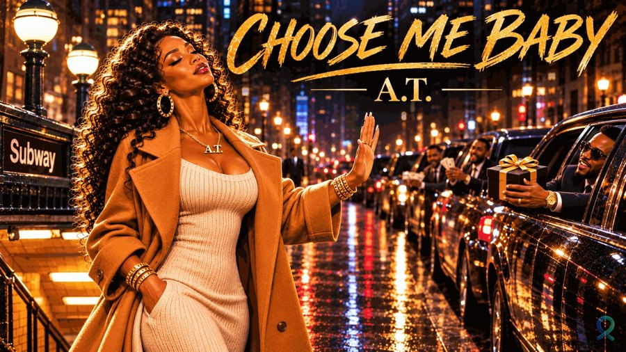

Track 02 · My Turn
Choose Me Baby
The big house, the connections, the private flights, the diamonds, the record deal. Every offer pulls up to the curb, and every time she says no and takes the train. Her girls think she's crazy for passing on all that. She knows the richest man alive couldn't buy what she already has.
 Watch the official video
Watch the official video
Lyrics
They keep telling me I could do better
Maybe I could
But better according to who?
Listen
He got the big house, driveway full of cars
Another got connections, wanna make me a star
One talking vacations, private flights abroad
Another buying flowers like he buying my heart
They say I'm crazy, girl, you passing on gold
You could have the whole world, why you settling though?
I just laugh, shake my head, let 'em talk what they know
They can see what he ain't got, not the love that he shows
See, we came through the rain when the rent got tight
Had a couple bad days, had a couple long nights
Had to learn how to listen, had to learn how to fight
For the love, not each other, had to get that right
And it ain't about struggle, ain't addicted to pain
If we ain't growing together, ain't no reason to stay
But we built something solid they can't purchase today
So tell 'em keep the whole world, I ain't changing my lane
Choose me, baby, like I choose you
Ain't nobody in this world gonna love you like I do
They can promise me forever, put the stars at my feet
But they can't give me nothing that would make me wanna leave
Choose me, baby, when the lights go low
When the money ain't talking and the truth gets shown
Everybody got an offer, everybody got a dream
But out of everybody, baby, you're the one for me
Had a dude say, "Baby, I can change your life"
Told him, "That's cool, but I'm good with mine"
Said, "I could put you in a mansion overnight"
I said, "Can you build a home when the money runs dry?"
See, you talking 'bout the price, I'm talking 'bout the worth
You can buy a piece of land, can't buy what we earned
You can put a million diamonds on a woman's hand
Can't purchase understanding from a grown-ass man
My girls say, "He ain't perfect," well, neither am I
We both got some history, both swallowed our pride
Had some hard conversations, had to put ego aside
Had to look at our reflection, couldn't run, couldn't hide
Now they mad 'cause I'm happy, they confused 'cause I stayed
Not because I couldn't leave, I had choices to make
See, the highest price ain't always what you paid
It's the value of the love that you both chose to save
Choose me, baby, like I choose you
Ain't nobody in this world gonna love you like I do
They can promise me forever, put the stars at my feet
But they can't give me nothing that would make me wanna leave
Choose me, baby, when the lights go low
When the money ain't talking and the truth gets shown
Everybody got an offer, everybody got a dream
But out of everybody, baby, you're the one for me
Ohhh, let 'em talk
Let 'em say what they wanna say
They weren't there when we nearly broke
They ain't seen how far we've came
And I don't want you out of habit
Don't want you 'cause you're scared to leave
You got the whole world full of choices
And I need you choosing me!
Choose me! Like I'm choosing you!
If love was for sale, they'd be bidding all night
Trying to outspend the next just to get in my life
But the richest man alive couldn't buy what we got
'Cause the price ain't the value, that's the whole damn plot
I ain't staying for the years, I ain't staying for the cost
Ain't confusing being loyal with accepting a loss
I'm here 'cause you show up, even when it gets rough
And you choose to do the work when the easy ain't enough
So let 'em pull up in the foreign, let 'em flash that ice
Let 'em offer me the world, let 'em name their price
I don't need another offer, I already decided
When the world gave me choices, you're the one I sided with
Choose me, baby, like I choose you
Ain't nobody in this world gonna love you like I do
Choose me, baby, when the lights go low
When the money ain't talking and the truth gets shown
Out of everybody, baby! You're the one for me!
They can offer me everything
But everything ain't what I need
I don't need the highest bidder
I need the right one
And baby, I choose you
Written by Grey Beard and A.T. ℗ & © 2026 Threadia AI, Inc. All rights reserved.